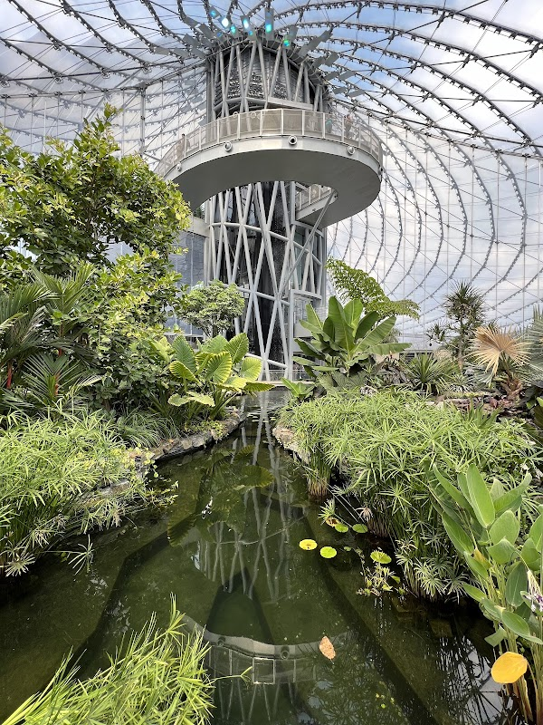

Indoor things to do in Winnipeg with kids

From November to March, and on the wet weeks either side of that, a Winnipeg day with children is really a question of how many hours you can fill without a coat on. Six places do it well. They are ranked below by how reliably each one absorbs a family for an afternoon, which is not the same as how famous it is, and the reason for each rank is stated rather than implied.
1. The Manitoba Children's Museum, for anyone under eight
It takes first place for one reason: nothing else in the city is built entirely around children touching things. The museum sits at 45 Forks Market Road, inside the 1889 Northern Pacific and Manitoba Railway repair shop, which is the oldest building at The Forks, and the galleries are the kind a four-year-old can run at without being told to stop. One of them, the Engine House, is the railway's own engine house. Doors open at 9:30 a.m. and the galleries close at 4:30 p.m., and it is not open seven days in every season, so check childrensmuseum.com before you build a morning around it. One flat per-person rate covers everyone over a year old. Two hours is the honest ceiling for most families; past that, the under-fives tip over.
2. The Manitoba Museum, for the widest range of ages in one building
Second, because it is the only indoor attraction here that can hold a six-year-old and a thirteen-year-old at the same time without either of them being bored. Nine galleries, a full-dome planetarium and the hands-on Science Gallery sit under one roof at 190 Rupert Avenue, on the block behind the Centennial Concert Hall, and one pass gets you into all three; there are no single-attraction tickets. Plan around the planetarium, which is the only fixed appointment of the visit and is dark on Mondays. With children, go to the Science Gallery before the Nonsuch, not after, because the ship rewards attention they will not have left. We walked the whole route in order in our guide to the Manitoba Museum.
3. The Leaf at Assiniboine Park, for the warmest air in the city
Third, and first if the forecast is brutal. The biomes are indoor gardens at tropical humidity, which in February is a physical relief rather than a nice idea, and the photograph at the top of this page is the tropical biome: a pond, palms, a six-storey waterfall and a spiral walkway that children treat as the whole point. Assiniboine Park lists the biomes as open daily from 9 a.m. to 9 p.m. with last entry at 8 p.m., which makes this the only entry on the list that works after dinner in a season when the sun is gone by 4:30. It closes at 4 p.m. on December 24 and all day on December 25. Advance tickets cost less than the gate rate, and the outdoor Gardens at The Leaf are free. Winnipeg Transit's D19 Corydon runs out to the zoo loop in the park.
4. Activate Games, for the ones who need to move
Fourth place goes to a Winnipeg invention. Activate opened its first active gaming room here in 2019, the company still runs its head office in the city, and the format is now in more than seventy locations around the world: a series of lit rooms where teams play physical challenges against a clock. Book a slot. It is the entry on this list most likely to be full on a Saturday in a school break, and walk-ins get the leftovers. The east-end site is at 1150 Nairn Avenue; there is a second Winnipeg location in Transcona. Sessions run about an hour, which is the right length, and it is the one place here that works for a twelve-year-old who has decided museums are over.
5. An indoor pool, with a caveat about Pan Am
Fifth, because swimming is the cheapest reliable hour in any Canadian winter, and the city runs indoor pools in most quadrants. The best known is Pan Am Pool at 25 Poseidon Bay, which holds three pools including a kiddie pool, plus an indoor track. The caveat matters if you are booking ahead: the City has tendered a major renewal and expects construction to run from January 2027 to summer 2028, with the building closed to the public for that period. Public swim times shift week to week at every branch, so the schedule on winnipeg.ca is the only version worth trusting, and some slides and features carry a height rule measured at the shoulder.
6. The Millennium Library, for an hour that costs nothing
Last place is not a complaint. The main branch of the Winnipeg Public Library at 251 Donald Street is free, warm and downtown, and a tired family can sit in the children's area for an hour with no ticket and no plan. It ranks sixth only because it will not fill a whole afternoon the way the first three will. Treat it as the recovery stop between two other things rather than the destination, and check the day's hours on the city's library page, which changes between summer and winter schedules.
Before you go: Admission rates, opening days and swim times at all six move with the season and the school calendar. Confirm the day you are visiting on each venue's own site, and book Activate and the planetarium ahead during Manitoba's spring break.
If the weather breaks
Winnipeg winters produce a surprising number of clear, still, minus-twelve afternoons that are perfectly good outside, and on one of those the right answer is skates. The Arctic Glacier Winter Park at The Forks has a covered rink, a slide on the riverbank and a warm building to retreat into, which makes it the easiest outdoor swap for any of the above; we cover the season in our Winter Park guide. For the longer list of year-round options with children, including the summer ones, see things to do with kids in Winnipeg.
Families staying at our three-bedroom house in Crescentwood tend to pair one of these with a nap: The Forks is a ten-minute drive, Assiniboine Park about thirteen, and the D19 passes close by on Corydon. Our Airbnb listing has the dates.